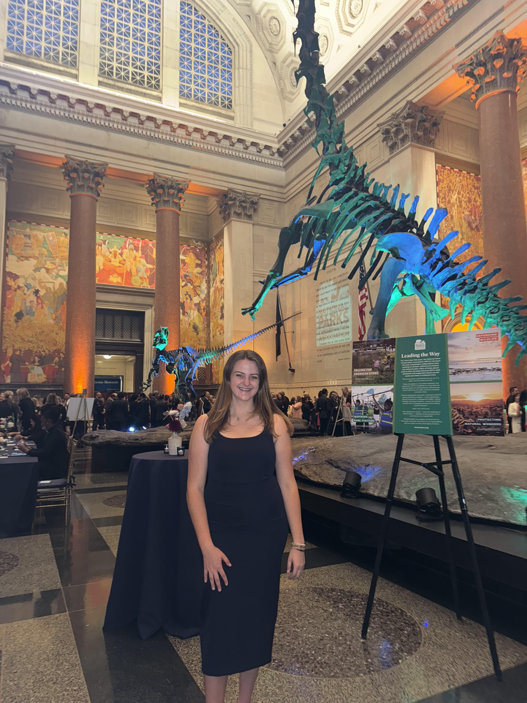

A New Jersey Native, Grace grew up just outside the Sandy Hook unit of Gateway National Recreation Area, which cultivated a lifelong passion for the diverse stories told through history and the environment.
This passion drives Grace's commitment to sharing overlooked and untold histories. She served as a researcher on female lighthouse keepers of the New York Harbor Region for exhibition at Twin Lights Historic Site, where she currently works. Grace has also contributed to a collaborative report on interpretive themes at Stonewall National Monument with the National Park Conservation Association (NPCA). In 2024, she joined the NPCA North East's inaugural Young Leaders Council.
Grace holds a degree in Biological Anthropology from Arizona State University. She is currently pursuing a Master's in Library and Information Science from Pratt Institute.
Grace's Favorite National Park Sites!